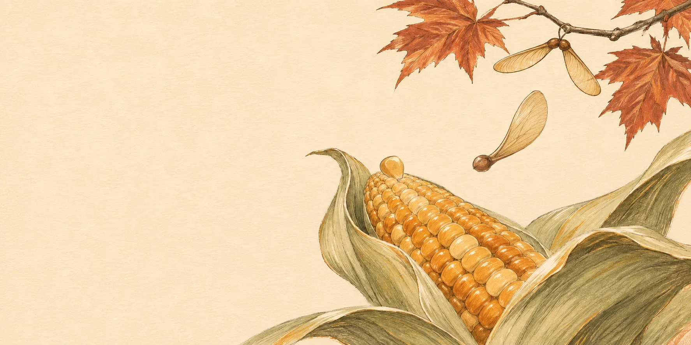

Tablet Sketch Explainer
A Pop & a Pirouette
A kernel springs from a pan. A maple seed twirls to the ground. How do two little seeds find their moment in the air?
Watch the films3 minutes each
↓Scroll to set the seeds in motion
The double feature
English voice · Handwritten English captions
A Kernel Lets Go
Inside a hard yellow shell, a little water waits. When the shell gives way, what pushes the kernel off the pan?
Read the English narration
At the pencil tip
When does a line become colour?
Watch the pencil pick out the rows on the cob, one grain at a time. Then the green of the husk slides just over the edge of the line.
What will you draw?
Pick one small thing you would like to understand. Start with its outline.
Make a tablet sketch film
Open the project in Codex and describe your film.